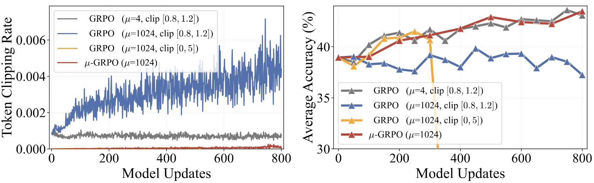
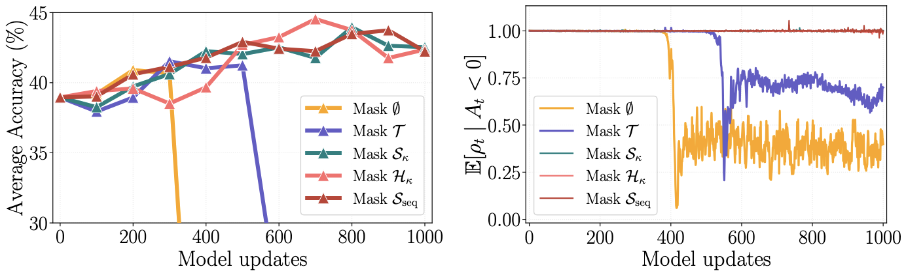
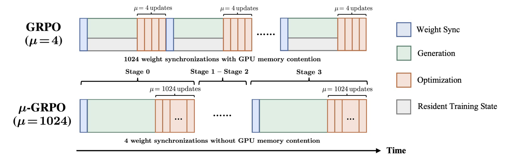
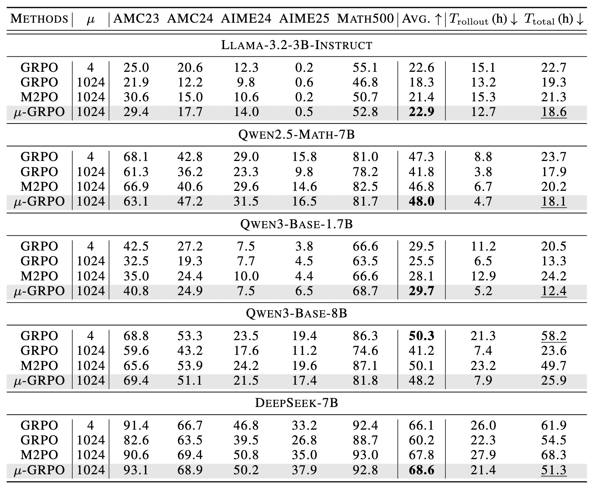

How Off-Policy Can GRPO Be?
\(\mu\)-GRPO for Efficient LLM Reinforcement Learning
TL;DR: Our work shows that GRPO has much stronger rollout-staleness tolerance than previously assumed, and that this tolerance can be converted into training efficiency when the right instability is controlled. We introduce \(\mu\)-GRPO, a high-staleness RL framework that organizes training into a few large generation–optimization stages and stabilizes stale-data reuse with relaxed clipping and negative-advantage veto. Extensive evaluation across five language models and multiple math reasoning benchmarks shows that \(\mu\)-GRPO matches standard GRPO's reasoning performance while achieving \(1.82\times\) faster rollout generation and \(1.53\times\) faster end-to-end training.

Figure 1: Comparing GRPO and \(\mu\)-GRPO. Average accuracy across five math benchmarks over wall-clock time. \(\mu\)-GRPO uses four large rollout–optimization stages, inducing high rollout staleness while reducing rollout–training switching overhead. It reaches GRPO's performance with a \(2.2\times\) wall-clock speedup on DeepSeek-7B1. Both methods are trained for 4096 updates.
1 DeepSeek-7B denotes the Qwen2.5-Math-7B model distilled from DeepSeek-R1. See the Hugging Face model.
Introduction
GRPO has become a central algorithm for reinforcement learning with verifiable rewards in large language model reasoning. In practice, however, GRPO is usually kept close to on-policy: rollout data are refreshed every few updates so that the behavior policy remains near the current policy. This conservative design improves stability, but also creates substantial system overhead from frequent rollout generation, weight synchronization, and switching between inference and training engines. In this work, we revisit whether GRPO really needs to be so conservative. We show that GRPO has much stronger rollout-staleness tolerance than previously assumed, and that this tolerance can be turned into real training efficiency once the localized instability of stale negative-advantage updates is controlled. Based on this finding, \(\mu\)-GRPO uses a few large generation–optimization stages to reuse stale rollouts for many updates, and stabilizes stale-data reuse with relaxed clipping and negative-advantage veto. Extensive evaluation across five language models and multiple math reasoning benchmarks shows that \(\mu\)-GRPO matches standard GRPO's reasoning performance while achieving \(1.82\times\) faster rollout generation and \(1.53\times\) faster end-to-end training.
Diagnosis: High Staleness Fails Locally
Naively increasing staleness reveals a clipping dilemma. Tight GRPO clipping keeps updates stable but clips away many stale-rollout gradients, causing learning to plateau. Relaxed clipping exposes those gradients and recovers early learning, but can later collapse.
The collapse is not generic off-policy failure. The paper identifies a localized signal: negative-advantage responses whose token likelihood under the current policy becomes extremely small relative to the behavior policy. After such a trigger, later suffix tokens are conditioned on a prefix the current policy is unlikely to reach, yet token-level GRPO can still update them aggressively. The diagnostic results in this section are measured on Qwen2.5-Math-7B.
To localize the instability, we compare five masking scopes, applied only to negative-advantage responses:
- No-Mask Baseline: Keeps the full, unaltered response.
- Trigger-token Mask \(\mathcal{T}(y)\): Removes all trigger tokens.
- Suffix Mask \(\mathcal{S}_{\kappa}(y)\): Removes all tokens from the trigger boundary, exclusive, to the end.
- Non-trigger Suffix Mask \(\mathcal{H}_{\kappa}(y) = \mathcal{S}_{\kappa}(y) \setminus \mathcal{T}(y)\): Masks the suffix tokens excluding trigger tokens.
- Sequence Mask \(\mathcal{S}_{\mathrm{seq}}(y)\): Masks the whole response once any trigger appears.

Figure 2: Clipping creates a high-staleness dilemma. At \(\mu = 1024\), \([0.8, 1.2]\) bound clips many more tokens and plateaus at lower accuracy (blue), while relaxed clipping recovers early gains but later collapses (yellow).

Figure 3: Localizing the harmful updates. Under relaxed clipping \([0, 5]\), masking only \(\mathcal{T}\) still collapses, while masking \(\mathcal{H}_{\kappa}\) or broader scopes keeps both accuracy and negative-advantage importance ratios stable.
The key issue is prefix support. Once a trigger appears at position \(\kappa\), its tiny local ratio enters every later prefix occupancy ratio, so teacher-forcing continues to update suffix tokens behind a prefix that the current policy is unlikely to generate. Token-level GRPO only checks each token's local ratio, and therefore can still apply large updates to post-trigger suffix tokens whose own local ratios are not tiny.
This explains why \(\mathcal{H}_{\kappa}\), rather than \(\mathcal{T}\), is the critical harmful set: trigger tokens already have tiny coefficients, while post-trigger suffix tokens inherit low prefix support but remain locally active.
Illustration: why the suffix can be unsafe
A suffix can look locally reasonable while still being conditioned on a prefix that the current policy no longer supports.
... Assume x = 3. Then x² = 9.
▲ └──────────┘
trigger token normal local ratios,
but behind an off-support prefixHere the trigger is the token 3, whose local conditional probability ratio is extremely small: \[ \frac{\pi_{\theta}(3 \mid \ldots\ \text{Assume } x =)} {\pi_{\mathrm{behav}}(3 \mid \ldots\ \text{Assume } x =)} < 10^{-4}. \] But a suffix token can still have a normal local ratio, e.g., \[ \frac{\pi_{\theta}(\text{Then} \mid \ldots\ \text{Assume } x = 3.)} {\pi_{\mathrm{behav}}(\text{Then} \mid \ldots\ \text{Assume } x = 3.)} = 0.8. \]
The continuation "Then x² = 9" is the non-trigger suffix \(\mathcal{H}_{\kappa}\): it is perfectly reasonable under that prefix. \(\mu\)-GRPO vetoes the suffix because the prefix containing the trigger token is no longer supported, not because the suffix itself is bad. The paper formalizes this prefix-support mismatch.
Method: \(\mu\)-GRPO
\(\mu\)-GRPO trains GRPO in a few large stages rather than many small rollout–optimization cycles. Each stage freezes the current policy, generates a large static rollout dataset, and then reuses that dataset for many optimizer updates. This design increases rollout staleness, but reduces expensive rollout refreshes, weight synchronization, and switching between inference and training engines.

Figure 4: \(\mu\)-GRPO reduces rollout refreshes from 1024 to 4 over 4096 model updates. Standard GRPO frequently alternates generation and optimization, while \(\mu\)-GRPO uses large rollout stages followed by long optimization phases to reduce synchronization overhead and GPU memory contention.
Generate a large static rollout dataset
At the beginning of each stage, \(\mu\)-GRPO freezes the current policy as the behavior policy and uses it to sample response groups for a large prompt set. During decoding, it stores each response together with its group-normalized advantage and token-level behavior log-probabilities.
Optimize for many updates on the same dataset
After rollout generation finishes, the rollout engine can be released from memory. The trainer then optimizes the policy on the static dataset for many updates, computing importance ratios against the stored behavior log-probabilities.
Stabilize stale-data reuse
To preserve useful stale-rollout gradients, \(\mu\)-GRPO uses relaxed clipping. To prevent collapse, it applies negative-advantage veto: once a negative response crosses a low-ratio trigger boundary, \(\mu\)-GRPO masks the unsafe post-trigger updates before applying the GRPO objective.
Results: Performance and Efficiency
We compare \(\mu\)-GRPO against both standard low-staleness GRPO and naive high-staleness GRPO under the same 4096-update training budget. Simply increasing GRPO to \(\mu = 1024\) reduces rollout and wall-clock time, but hurts accuracy. \(\mu\)-GRPO keeps the efficiency benefit of large-stage rollout execution while recovering this lost performance, improving average accuracy from 41.8% to 48.0% on Qwen2.5-Math-7B and from 60.2% to 68.6% on DeepSeek-7B. Against standard GRPO, \(\mu\)-GRPO matches reasoning performance across all five model settings while reducing rollout-generation time by \(1.82\times\) and total wall-clock training time by \(1.53\times\) on average. Compared with M2PO under the same high-staleness regime, \(\mu\)-GRPO achieves competitive accuracy while further reducing rollout-generation time by \(1.87\times\) and total training time by \(1.49\times\), showing that \(\mu\)-GRPO more directly converts GRPO's staleness tolerance into end-to-end efficiency gains.

Table 1: Performance (%) and efficiency comparison across five math reasoning benchmarks and five models. Bold marks the best Avg.; underline marks the fastest \(T_{\text{total}}\) among methods no worse than standard GRPO in Avg. Overall, \(\mu\)-GRPO achieves the strongest performance–efficiency trade-off.
BibTeX
@misc{tian2026mugrpo,
title={How Off-Policy Can GRPO Be? {\mu}-GRPO for Efficient LLM Reinforcement Learning},
author={Minghao Tian and Yunfei Xie and Chen Wei},
year={2026}
}